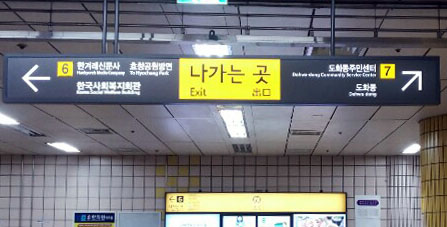
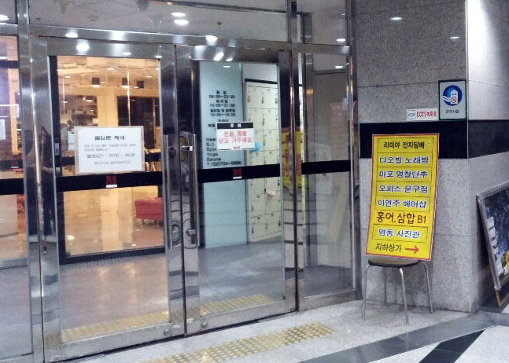

As you go straight in this direction, It's my home!

There are two transportation methods available when travelling from Incheon International Airport to our house:either by the Airport Railroad, or by the Airport Bus.
Using the Airport Railroad is the easiest and quickest method to get to our house. To board the Airport Railroad at Incheon International Airport, simply follow the Airport Railroad signs that are present at the terminal, mostly in yellow writing.
There are two rail services from Incheon: an express service direct to Seoul Station, and an All Stop Train. You will need to board the All Stop Train, as you will be heading to “Gongdeok” station.
At the entrance gate for the All Stop Train, you will need to purchase a single-use train ticket, by selecting your destination as “Gongdeok” station from the ticket vending machines.
Once you reach “Gongdeok” station, you will need to leave via exit number 6. Exit numbers are shown on yellow squares on directional overhead signs at the concourse.
When you come, you will meet the stairs. Do not worry about a lot of luggage. When you come to the left of the stairs for a short time, there is an elevator that can climb up.
Continue to follow the sign that leads to exit number 6 until you reach the stairs to go up to the ground floor outside, however DON’T go up the stairs. Instead, continue straight towards the “Metro the Ovile” direction, as our house is connected to the station.
As you go straight in this direction, It's my home!
You will reach a fitness centre/gym. Pass through the first glass doors, turn immediately right,
And walk straight past all the lockers. At the end of this passageway, there is a metal door to the right. Open this door (as it usually remains shut) and you will reach the elevators which goes up to our house.

※ The passage, which is connected directly to B2F, is closed from 12 midnight to 6 am the next day.
When you come home at this time, you have to get out of exit 6 using the stairs shown above.